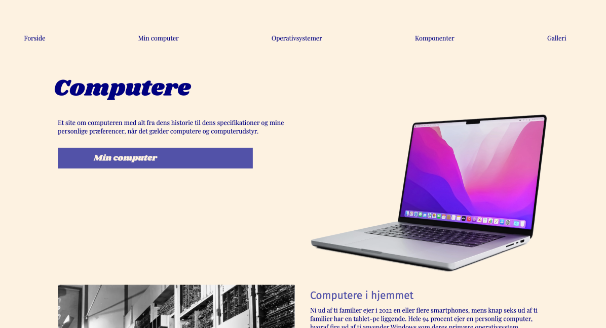

02
WEB
TEMAET
I dette tema blev vi introduceret for de grundlæggende værktøjer og programmer der er nødvendige på uddannelsen. Vi fik undervisning i de væsentligste begreber indenfor grundlæggende web. Bl.a. designprincipper, style-tiles, fonte, gestaltlove og wire-frames. Vi blev også undervist i grid-opsætninger.
Noget væsentligt ved undervisningen var også at gøre vores site responsivt og arbejde efter mobile-first - hvor man først koder efter mobil-størrelse og derefter laver en media-queary til desktop-størrelse. Dette gjorde vi vha. HTML og CSS i VS-code.
OPGAVEN
Designet var selvvalgt, meget simpelt - men for at afprøve farver, fonte og tekstopsætning på et website.

UDFORDRINGER
Min største udfordring ved processen var klart at fange grid-opsætningerne, der flere gange drillede mig. Til sidst var det en stor forløsning at få det til at virke, og efterfølgende har jeg flere gange vænnet tilbage til sitet for at genbruge de forskellige grid-layouts.
MIN LØSNING :
"02 - WEB - Website"